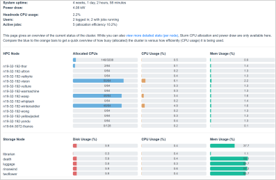

Slurm - Overview
Important
Ideally, you’ll read all of this page before attempting to use the cluster, even if you’re already used to Slurm from other HPC setups, as the exact configuration and rules/policy almost always differ from system to system.
Cluster jobs are managed using the Slurm Workload Manager (https://slurm.schedmd.com/).
Slurm is responsible for accepting, scheduling, dispatching, and managing the execution of jobs submitted to the cluster. At the most basic level, you put the commands you want to run into a script file, submit that script to the cluster’s queue (of jobs), and Slurm will then select a compute node for it to run on once it reaches the front of the queue. There is also the capability to run interactive sessions on a node.
Important
All data analysis programs and computational workloads must be run using Slurm. You should only use the head node (gruffalo) for tasks such as job submission and monitoring - it doesn’t have the resources available to support heavy workloads.
The Slurm man page is a useful starting point for understanding Slurm, viewable by running:
$ man slurm
Slurm commands (each with their own man pages) include tools such as sbatch and srun to initiate jobs, scancel to terminate queued or running jobs, sinfo to report system status, and squeue to report the status of jobs. We’ll cover most of these in our guide below.
Jobs
Each element of work within Slurm is known as a job or job task (because some jobs can contain multiple tasks). A job includes a description of what to do, for example an executable command, and a set of parameter definitions that describe how the job should be run. Slurm locates an appropriate free resource - one or more compute nodes - on which to run the job and sends it there to be executed.
Slurm recognises four basic classes of jobs: interactive jobs, batch jobs, array jobs, and parallel jobs.
An interactive job provides you with an interactive login to an available compute node in the cluster, allowing you to execute work that is not easily submitted as a batch job.
A traditional batch job is single segment of work that is executed only once, running until it completes with no user interaction.
An array job consists of a series of tasks that can all be run in parallel but are completely independent of one another (eg compressing a set of files in a directory). All of the tasks of an array job are usually identical except for the data sets on which they operate.
A parallel job consists of a series of cooperating tasks that must all be executed at the same time, often with requirements about how the tasks are distributed across the resources. Very often parallel jobs make use of a parallel environment, such as MPI to enable the tasks to intercommunicate.
Queues (partitions)
Jobs are scheduled by submitting them to a queue - or partition as Slurm likes to call them - and each queue has a number of available CPUs that can be used for running jobs.
Note
We have three main queues and three addition special queues (described in more detail on the Slurm - Queue Policies & Advice page). If you don’t specify one specifically, then jobs are submitted to the medium queue by default.
You can see the status of the queue(s) at any time by using the squeue command:
$ squeue
JOBID PARTITION NAME USER ST TIME NODES NODELIST(REASON)
21356 medium bash1 dvader R 0:15 1 n19-32-192-hela
21357 medium bash2 dvader R 0:15 1 n19-32-192-hela
21358 medium bash3 dvader R 0:15 1 n19-32-192-hulk
This outputs a list of jobs, alongside information on the queue they’re running on, their name, state (eg, R=active, PD=waiting), owner, runtime, and the resources in use.
To identify what resources are currently available use the sinfo -N command, which will list the available compute nodes:
$ sinfo -N
NODELIST NODES PARTITION STATE
...
n19-04-008-cortana 1 debug idle
n19-32-192-ghost 1 short idle
n19-32-192-groot 1 short idle
n19-32-192-hela 1 medium* idle
n19-32-192-hulk 1 medium* idle
n19-32-192-thor 1 long alloc
n19-32-192-ultron 1 long idle
...
The compute nodes are listed against the partition they can be accessed from and their current state: unused (idle), partially used by running jobs (mix) or completed occupied (alloc). An offline node will shown as down.
Note
The nodes are named in the form nYY-CPU-MEM-name, for example n19-32-192-hulk means it was purchased in 2019, has 32 CPU cores, 192 GB of memory and is named hulk. With the exception of cortana, all nodes have hyperthreading enabled, so their actual CPU count (as seen by Slurm) is doubled, meaning for example, that 64 ‘CPUs’ are available for use on hulk.
You can also get a graphical overview of the state of the cluster and see how busy/allocated it is by visiting https://www.cropdiversity.ac.uk/top/

Important
You should also make yourself aware of our Green Computing policy, that may keep idle nodes in a powered-down state until they are needed.
Interactive jobs
Starting an interactive job is a quick and easy way to get access to a powerful compute node, allowing you to start running analyses with the minimum of fuss. Use the srun command, as follows, to start an interactive job:
$ srun --pty bash
Tip
You can also use just srsh. See Slurm - Shortcuts and Aliases for details.
This will assign you an interactive shell on an available node and reserve - by default - 1 CPU and 1.5 GB of memory for your use until you exit the shell. (Information on how to request more than the default is given below in the Allocating resources section.)
Important
Remember that this allocation is reserved for your use for the entire time the shell is active, so if you are not doing anything you should really exit the shell - type exit or CTRL+D - to avoid tying up resources that could otherwise be utilized.
If you want to run an interactive, graphical job, then you can enable X11 forwarding as follows:
$ srun --x11 --pty bash
This will only work if you’ve got a local X-Server running and connected to gruffalo with X11 enabled (ie used ssh -Y). Note that performance over the internet with X11 is usually poor too.
Batch jobs
Most long running jobs should be handled using a job script, where you wrap the commands you want to run into a script file and then submit that. Here’s an example, showing the contents of a file called test.sh:
#!/bin/bash
#SBATCH --job-name="test job"
#SBATCH --export=ALL
echo "Starting job on $HOSTNAME"
sleep 60
echo "Job finished"
This is a normal bash shell script with some extra Slurm parameters (more on them later) inserted near the top using the #SBATCH prefix, in this case to say that we want the job to be called “test job” and we’d like to export all environment variables from the submitting shell into the job’s environment. The job in this case is a few simple steps to print out (echo) some infomation, along with a command to “sleep for 60 seconds”.
The job is submitted using sbatch:
$ sbatch test.sh
After submission, the job is assigned a unique ID and added to the queue, then run once a resource that can support it is available. We can check its status with squeue:
$ squeue
JOBID PARTITION NAME USER ST TIME NODES NODELIST(REASON)
21369 medium testing dvader R 0:30 1 n19-32-192-hela
Note
Any output and error information that would normally have been printed to the screen are merged together into a file named using the job’s ID (slurm-21369.out in this example) but you can override this behaviour using the --output and --error parameters.
Array jobs
An array job is one in which the submitted script is run multiple times. The individual instances of the job, known as tasks, are distinguished by the value of the $SLURM_ARRAY_TASK_ID environment variable. For example, if an array job of 50 tasks is run as follows, $SLURM_ARRAY_TASK_ID will have a value of 1 in the first instance, 2 in the second instance, and so on up to 50.
Use the --array option to specify an array job, eg:
#!/bin/bash
#SBATCH --array=1-50
mycommand.exe input_file_$SLURM_ARRAY_TASK_ID
This example will run mycommand.exe 50 times, starting with input_file_1, input_file_2, and so on up to input_file_50.
As an a second example, consider compressing a folder of 50 .fasta files. We could just run pigz *.fasta, but each file will be processed sequentially - and where’s the fun in that when you have a cluster with thousands of CPUs? Instead, a simple array job can run this in parallel and compress all 50 files at the same time:
#!/bin/bash
#SBATCH --array=0-49
FILES=(*.fasta)
pigz ${FILES[$SLURM_ARRAY_TASK_ID]}
We’ve done two things here:
retrieved a list of the
.fastafiles in the current directory and stored them in a Bash array variable calledFILESrun
pigzon each element within that array (${FILES[0]},${FILES[1]}, etc)
Note that because Bash arrays are zero-indexed, we therefore told Slurm to run from 0-49 (rather than 1-50) to deal with this. Array jobs also produce a separate .out file for each task, so if this job had an ID of 25000, we’d have created output files called slurm-25000_0.out, slurm-25000_1.out and so on.
Tip
Each job submitted to the cluster requires a certain amount of resources, so if you’ve got a large number of jobs that only differ from each other in a minor way, and it’s possible to distinguish between them using variables like $SLURM_ARRAY_TASK_ID, then it’s much more efficient in terms of resources and Slurm job scheduling to submit a single array job with many tasks rather than many individual jobs.
Important
If you have an array job with a lot of sub tasks, you can limit the maximum number of tasks running at the same time by using a % separator, eg, --array=1-100000%250 - in this case limiting the job to 250 simultaneously running tasks.
Allocating resources
Queues, CPUs, and memory
Each job task is assigned 1 CPU and 1 GB of memory by default, and is submitted to the medium queue, but you can request different resources by passing additional parameters to Slurm.
For instance, to start an interactive job on the short queue with 8 CPUs and 16 GB of memory, use:
$ srun --partition=short --cpus-per-task=8 --mem=16G --pty bash
Or to provide the same options in an sbatch script, use:
#!/bin/bash
#SBATCH --partition=short
#SBATCH --cpus-per-task=8
#SBATCH --mem=16G
echo "CPUs available: $SLURM_CPUS_PER_TASK"
Warning
If you don’t know what resources your job needs, it may be tempting to ask for more CPUs or memory than required - just to be safe - but you also need to be sensible with your requests, as over-allocation of resources will lower cluster availability, negativily impacting everyone. There’s much more discussion of this on the Slurm - Queue Policies & Advice page.
Important
All our servers have hyperthreading meaning each core can run two threads at once. When you request a certain number of “CPUs” from SLURM you are requesting threads (not cores). However SLURM cannot make two different jobs share the threads of a single core, so two different jobs or job tasks will not share a physical core. This means, for example, that a job requesting three CPUs will actually be allocated two full physical cores (four threads), but still only have use of three.
You’re therefore better off submitting jobs that always ask for an even number of CPUs.
Further to the above point, you can see this hyperthread allocation in action by starting a simple interactive job and querying the node info:
$ srun --pty bash
$ sinfo -N -o "%25N %9R %14C"
NODELIST PARTITION CPUS(A/I/O/T)
n19-32-192-hulk medium 2/64/0/64
We passed no extra parameters, meaning the job only has access to a single CPU, but it’s actually taken up two CPUs (2/64) in the allocation list for the node it’s running on.
Note
CPU resources may be shared (up to two jobs running per CPU) when a queue is full, but memory is always exclusive, so if you ask for 4 GB then no-one else can use up that memory and negatively effect your job.
GPU resources
The gpu queue must be used to access a GPU, which are available on the thanos node (and later on jaws once setup). Select the gpu queue and use the –gpus option to request one or both of the available GPUs. See GPU Processing for details.
Cancelling a job
To cancel one of your jobs from the queue use scancel:
$ scancel <jobid>
replacing <jobid> with the ID of your job.
You can also delete all of your jobs at once:
$ scancel -u <username>
Scratch space
You should ensure your jobs only write to scratch space while running. Don’t move any final data to /mnt/shared/projects until you’re sastified with the results and ready to back them up.
Warning
Never write temporary/intermediate working data to a backed up area.
The cluster recognises two scratch areas:
$SCRATCH- located on the networked BeeGFS system and good for parallel access to large data files. Visible togruffaloand all the compute nodes at all times.$TMPDIR- located on the local SSD drives installed in each node and good for tasks that require high performance with many small files. Automatically created and destroyed at the beginning and end of each job task and only visible to the node running that task.
Note
The Data Storage & Management Policy and Slurm - Queue Policies & Advice pages both cover various pros and cons of these two options in more detail.
Job summaries
You can retrieve summary information about a finished job by using the sacct command:
$ sacct -j <jobid>
By default this only shows basic information, such as the queue that ran the job and whether it completed or not. For more details try:
$ sacct -j <jobid> --units=G --format JobID,MaxVMSize,MaxRSS,NodeList,AllocCPUS,TotalCPU,State,Start,End
which provides information on:
JobID - the ID of the job
MaxVMSize - how much memory the job requested, but did not necessarily fill up (including any swap usage)
MaxRSS - the maximum real memory used by the job
NodeList - the compute node that ran the job
AllocCPUS - how many CPUs were allocated
TotalCPU - the total CPU time used by the job, which will often be less than the runtime, especially if the job spent time waiting on user interaction or disk I/O
State - the job’s exit state (failed or completed, etc)
Start - start time of the job
End - end time of the job
Tip
We’ve set up some Slurm - Shortcuts and Aliases to make running some of these longer commands easier for you.
Other helpful parameters
The following is a short list of Slurm parameters that you may find helpful. These options can either be given on the command line alongside srun and sbatch or inside a job’s script file using #SBATCH. You’ll find lots more by running man sbatch.
Change working directory
By default, Slurm’s working directory is the same as the one you used to submit the job. Any paths in your script will be relative to this location, and the .out files will be written here too, but you can override this using chdir:
#SBATCH --chdir=<directory>
Email notifications
You can have Slurm send you emails at various stages of a job’s life, for example, to be notified when a job successfully completes or has failed, use:
#SBATCH --mail-user=email@address.com
#SBATCH --mail-type=END,FAIL
Warning
While you can be notified separately for each task of an array job by using --mail-type=END,FAIL,ARRAY_TASKS you should be very careful of doing this with large array sizes or you’ll swamp yourself with hundreds or thousands of emails!
Job testing
If you pass --test-only as a parameter to sbatch, it’ll validate your batch script and give you an estimate of when your job will start. You can then tweak any requested resources (number of CPUs, amount of memory, etc) and try again, potentially enabling your job to start sooner.
Specifying nodes
You can request a specific node to run your job (within the confines of the queue you’ve asked for), by using --nodelist:
#SBATCH --nodelist=n19-32-192-loki
You can specify more than one node in the list, by separating the node names with commas, but note this will request allocation of all those nodes at once rather than select one from the list. You can also do the reverse and exclude node(s) by using --exclude.
Submitting binaries
If you want to run a simple binary command, it can be quicker to use the --wrap option, rather than creating a script, for example:
$ sbatch --wrap "pigz hugefile.txt"
Slurm now does the work of wrapping that up into a (virtual) script for you and submits it to the queue.